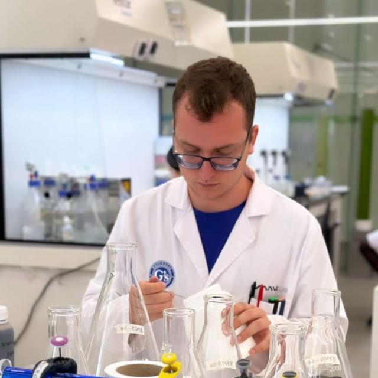
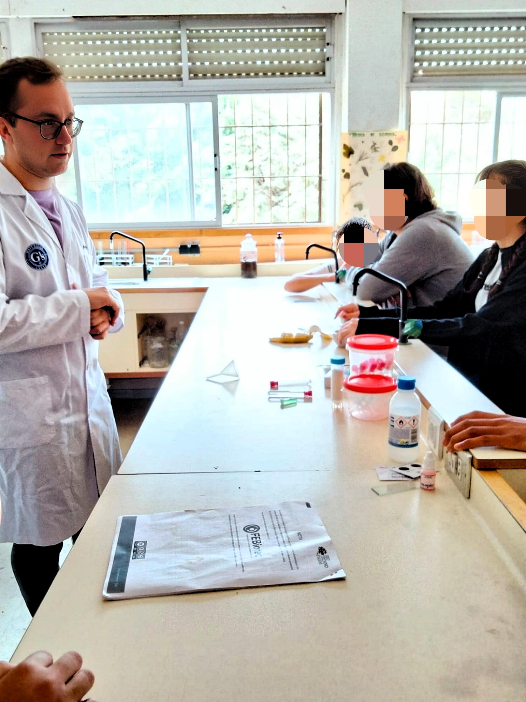

Soy un profesional en biotecnología con formación en la Universidad de Almería, donde cursé el Grado en Biotecnología y el Máster en Biotecnología Industrial y Agroalimentaria. He trabajado en el sector cosmético en Briseis, especializado en control de calidad y análisis de agua. Actualmente, desarrollo un proyecto de bioinformática aplicada a cultivos subtropicales y mediterráneos.
Aquí se listan mis publicaciones científicas y participaciones en congresos:

Participo activamente en eventos como Biotechnofarm y La Noche de los Investigadores, acercando la biotecnología al público.
Puedes contactarme a través de: